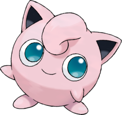

Rondoudou
À propos du Pokémon
 Lorsque ce Pokémon chante, il ne s'arrête pas pour respirer. Quand il se bat contre un adversaire qu'il ne peut pas facilement endormir, Rondoudou reste donc sans respirer, mettant sa vie en danger.Caractéristiques
Rondoudou ressemble à une boule rose. Il possède deux petites oreilles en pointe, roses et noires à l'intérieur. Il a également de grands yeux bleus qui lui donnent un air tendre.Evolutions
| Grodoudou avec une pierre lune |